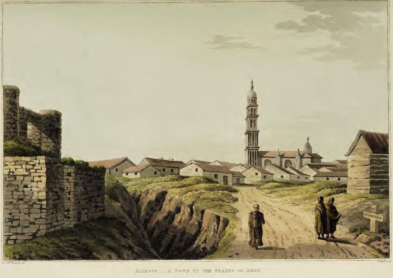
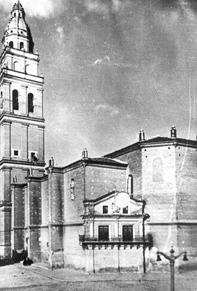
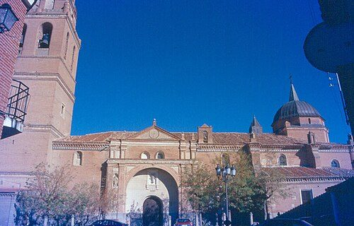
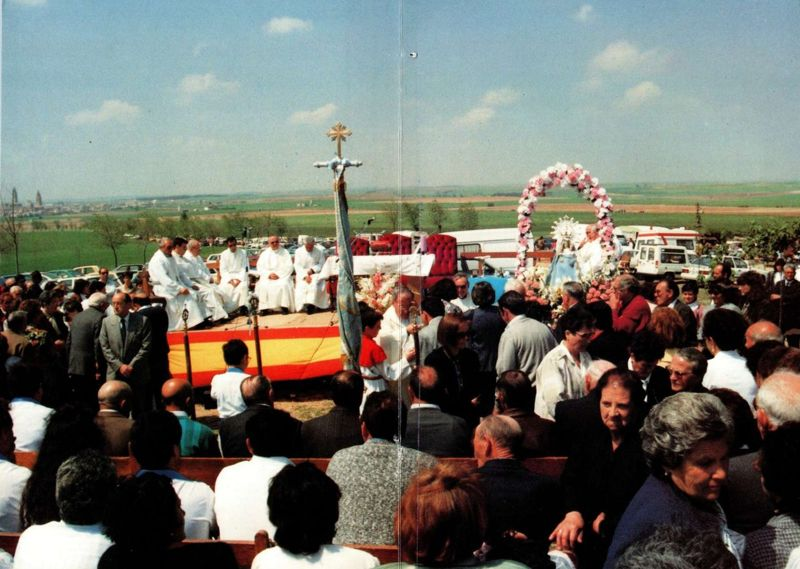

Fotografías antiguas
Alaejos en grabados, postales y fotografías de otro tiempo, con su procedencia. Una galería que crecerá con lo que aporten los vecinos.
Aquí se reúnen las imágenes antiguas de Alaejos que se han podido publicar: unas son de dominio público o tienen licencia libre, como las de la colección de la Fundación Joaquín Díaz en Wikimedia Commons; otras se publicaron en los programas de fiestas. Cada una enlaza con la página en la que se comenta. Pulse sobre una foto para verla en grande.




_(4).jpg){kind=link}



_(2).jpg){kind=link}

.jpg){kind=link}



¿Tiene fotografías antiguas de Alaejos?
Las fotos de fiestas, de bodas, de quintos, de trabajos del campo, de las calles o de las obras del pueblo son memoria de todos. Si conserva alguna, no hace falta que se desprenda de ella: se escanea y se le devuelve, y aquí se publica con su nombre o sin él, como prefiera. Escríbanos.
Conviene anotar, si se sabe, el año, el lugar y quiénes aparecen. Una foto sin fecha vale mucho; una foto con fecha y nombres vale el doble.
Cómo citar esta página
Amigos de Alaejos, «Fotografías antiguas», https://www.amigosdealaejos.org/historia-del-pueblo/fotografias-antiguas/ (revisión del 15/11/2026).